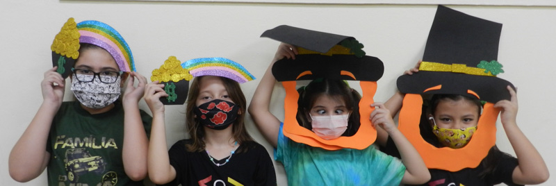
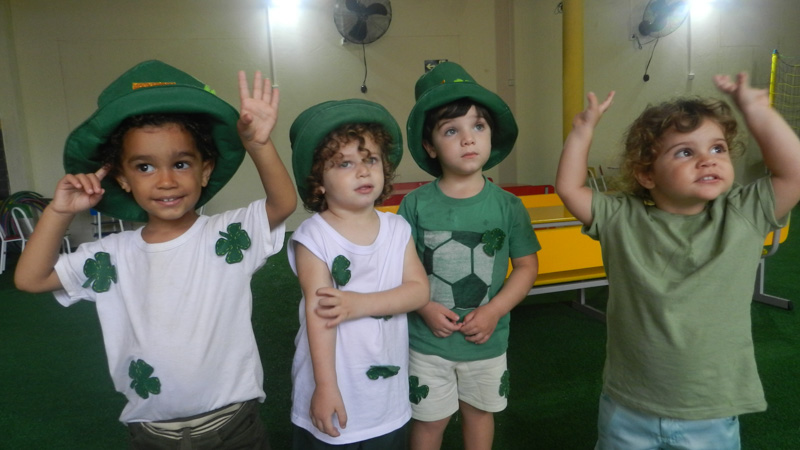
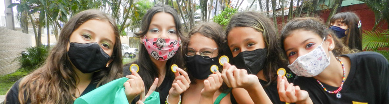

Alice Martinez
Reportagem/Fotos
Nicolly De Oliveira
Reportagem/Fotos
Bianca Carrilho
Reportagem/Texto
17 de Março de 2022
No dia 17 de Março acontece o St. Patrick's day, uma data em que é lembrada a morte de São Patrício, inicialmente era comemorada na Irlanda, por ser o padroeiro do país, mas com o passar do tempo foi se espalhando para diversos países do mundo. Quem foi St. Patrick ? São Patrício, o símbolo irlandês, nasceu no século IV, na Inglaterra.
A história conta que ele viveu até os 16 anos no país, com crenças e costumes pagãos. Mas foi o fato de que ele foi raptado por piratas e vendido como escravo à Irlanda. Lá, ele viveu em cativeiro por 6 anos, quando começou a se aproximar da religião católica.
Porém, ele conseguiu fugir da prisão e voltar à Inglaterra, onde estudou por 12 anos em um mosteiro e acabou se tornando um bispo católico. Foi quando ganhou o nome de São Patrício.
Por aqui, no colégio Trivium, tivemos muita comemoração e alegria. Os alunos participaram de diversas atividades para lembrar essa data, e para tudo ficar mais a caráter, a escola também estava toda decorada e os alunos vestiam roupas verdes e até beberam água com a cor verde! O dia foi repleto de diversão, com brincadeiras e danças.
Ao final do dia tivemos uma deliciosa surpresa, moedas de ouro de chocolate.